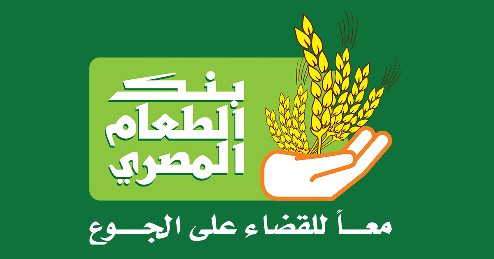

About Us |

Our Services |

Donate |

volunteer now |
|
About Us |
Our Services |
Donate |
volunteer now |
|
The EFB was founded in 2006 by a group
of businessmen with the aim of serving the
society and helping those in need by specializing in Hunger under the
name of Egyptian Food Bank that would be converted to a national project that serves
all governorates in Egypt.
The EFB is registered at the Ministry of Social Solidarity under Registration Number 562 We Are A non-profit organization specialized in fighting hunger through diversity and innovation. We create effective programs addressing hunger issues by creating partnerships with those who care about the underprivileged and hungry people in Egypt. |

|

|
EFB is the leading organization in fighting hunger in Egypt. It's experience and know-how is generated by a vast profesionnal
database, skilled field and administrative employees, and facilities that enable it's effective ability to feed the underprivileged in Egypt.
One of the EFB's essential functions is to organize charity work. The initiation of the "Sak Al Odheya" Program, related to the corban barium, assures the delivery of the large quantities of meat accumilated during the feast to the underprivileged in Egypt, in an adequately professional and organiyational manner. This program ensures that underprivileged cases are provided with quality canned meat and vegetables throughout the year, and not solely during the feast. |
individual volunteeringThe participation of those wishing to volunteer effortlessly in all departments and activities of the Egyptian Food Bank according to the volunteer's specialty or desire, in addition to participating in packing Ramadan Boxes. |
Food Bank Generation:Volunteering program for schools and universities, includes various activities such as volunteering and donating, in addition to employing young children in activities appropriate for their age after awareness sessions of the importance of volunteering and feeling for others, in order to reach a generation that has already participated in charitable work. |
|
The EFB is the first NGO in Egypt to be granted the ISO Certificate (2000-9002).
There are more than 250 employees working for the EFB, with various experiences and specializations.
The EFB has partnerships with numerous organizations, institutions and banks under the concept of CSR, that proactivley support the EFB's activities and programs.
The EFB initiated various donation programs for individuals according to their income categories.
|
|